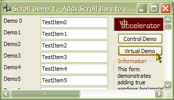

VB5 Scroll Bars Demonstration (88K)
VB5 Scroll Bars Demonstration (88K)
 VB6 Scroll Bars Demonstration (87K)
VB6 Scroll Bars Demonstration (87K)
 Bugs: 1 / 2
Bugs: 1 / 2
 Issues: 0 / 0
Issues: 0 / 0
 Questions: 0 / 0
Questions: 0 / 0
 2 Jul 2003
2 Jul 2003
Added Mouse Wheel support. Thanks to Chris Eastwood at vbCode Library for the suggestion.
The SB_BOTTOM and SB_TOP scroll codes were swapped. The scroll bar now goes to the correct position when you choose Top or Bottom from the Scroll Bar's context menu.
Added ScrollClick event which is raised when a mouse down occurs on the scroll bar.
 Subclassing Without The Crashes
Subclassing Without The Crashes

Adding Scroll Bars to Forms, PictureBoxes and User Controls
In the Win32 API, all windows can have scroll bars. However, this feature is not exposed in any way in Visual Basic. Its not too hard to enable, though provided you can intercept WM_HSCROLL and WM_VSCROLL messages sent to the window. This project provides a small, self-contained class which extends Forms, UserControls and PictureBoxes to allow full scroll-bar functionality. This class is based on the Flat Scroll-Bar control and provides the same functionality but in a smaller, easier-to-use package which you can compile directly into your executable.
Don't confuse the Win32 windows scroll bars with the scroll bar controls provided with Visual Basic. The VB scroll bars have always been a bit pants: they don't draw in the neat,professional style of Win32 scroll bars (the worst offense is the continual flashing when in focus and the fact it is impossible to prevent this occuring!) and they don't support the full scroll extents (allowing only 16-bit integer values rather than the full 32-bit offered by Win32).
COMCTL32.DLL v4.72 or above offers enhanced scroll bar controls which support Flat and Encarta drawing styles as well as the standard styles. This class takes advantage of these facilities whilst still allowing standard scroll styles regardless of which COMCTL32.DLL version is installed.
How It Works
Showing a window scroll bar is simple - just call the API call ShowScrollBar with the Window handle of the control and the appropriate scroll bar constant (SB_HORZ or SB_VERT) and the scroll bar appears. Windows automatically adjusts the client area of the window for you, and this is reflected in the values returned by VB's ScaleWidth and ScaleHeight properties.
Setting Scroll Bar Properties
Getting and setting scroll bar value, max, min and large-change properties is achieved via the GetScrollInfo and SetScrollInfo properties, which work on the SCROLLINFO structure:
' Scroll bar:
Private Type SCROLLINFO
cbSize As Long ' Size of structure
fMask As Long ' Which value(s) you are changing
nMin As Long ' Minimum value of the scroll bar
nMax As Long ' Maximum value of the scroll bar
nPage As Long ' Large-change amount
nPos As Long ' Current value
nTrackPos As Long ' Current scroll position
End Type
' SCROLLINFO fMask constants:
Private Const SIF_RANGE = &H1
Private Const SIF_PAGE = &H2
Private Const SIF_POS = &H4
Private Const SIF_DISABLENOSCROLL = &H8
Private Const SIF_TRACKPOS = &H10
Private Const SIF_ALL = (SIF_RANGE Or SIF_PAGE Or SIF_POS Or SIF_TRACKPOS)
Note that the actual Max value of the scroll bar is actually equal to the nMax value plus the nPage value, so when modifying the LargeChange or Max value you have to take this into account.
This allows you to set up the scroll bars. You then need to respond to the scroll bar position changing. This is done by intercepting the WM_HSCROLL and WM_VSCROLL messages sent to the window you have added scroll bars to:
' Scroll bar messages: Private Const WM_VSCROLL = &H115 Private Const WM_HSCROLL = &H114 ' Scroll bar type constants: Private Const SB_HORZ = 0 Private Const SB_VERT = 1 Private Const SB_CTL = 2 Private Const SB_BOTH = 3 ' Scroll bar notification types (returned in the first ' 16 bits of the wParam parameter of the message i.e. ' (wParam And &HFFFF&): ' - Set scroll value to max Private Const SB_BOTTOM = 7 ' - Set scroll value to max Private Const SB_ENDSCROLL = 8 ' - Time to raise Change event Private Const SB_LEFT = 6 ' - Set scroll value to value - SmallChange Private Const SB_LINEDOWN = 1 ' - Set scroll value to value + SmallChange Private Const SB_LINELEFT = 0 ' - Set scroll value to value + SmallChange Private Const SB_LINERIGHT = 1 ' - Set scroll value to value - SmallChange Private Const SB_LINEUP = 0 ' - Set scroll value to value + LargeChange Private Const SB_PAGEDOWN = 3 ' - Set scroll value to value - LargeChange Private Const SB_PAGELEFT = 2 ' - Set scroll value to value + LargeChange Private Const SB_PAGERIGHT = 3 ' - Set scroll value to value - LargeChange Private Const SB_PAGEUP = 2 ' - Set scroll value to max Private Const SB_RIGHT = 7 ' - Not required? Private Const SB_THUMBPOSITION = 4 ' - Set scroll value to track position Private Const SB_THUMBTRACK = 5 ' - Set scroll value to min Private Const SB_TOP = 6
Once this is done, it is a simple matter to set the appropriate value using the GetScrollInfo and SetScrollInfo API methods. These ensure you have access to the full 32bit range for the scroll bar rather than the old 16 bit (-32,768 to 32,767) values. To use Flat Scroll bars, simply use the FlatSB_ versions of the API calls instead. The cScrollBars.cls code in the downloads shows how it is done.
Interacting with the Mouse Wheel
Mouse Wheel support is enabled by intercepting the Windows WM_MOUSEWHEEL message, which was added to the Windows API for Windows NT4.0/Windows 98 and above. (Note Microsoft do provide an Intellimouse driver for earlier systems which uses custom messages. These messages are documented in the code but I have not implemented them here as these systems are now rare).
Typically current mouse wheels are notched, and have a series of detents which click into position as you rotate the wheel. However, this is not a design requirement for a wheel mouse, and the specification allows for free running wheels as well. To accommodate this notched mice wheels send a value which is a multiple of points whenever they click around. To calculate the actual number of lines you scroll from the value sent in the WM_MOUSEWHEEL you use this calculation:
ScrollLines = (WheelPoints \ WHEEL_DELTA) * WheelScrollLines
Where WHEEL_DELTA is defined in the Platform SDK as 120 and WheelScrollLines is the value returned by the SPI_GETWHEELSCROLLLINES system settings parameter (with a default of 3.
By default, the class automatically scrolls the bar by this number of lines in the vertical direction whenever the mouse wheel is used. One line is assumed to be one SmallChange increment. However, you can customise this behaviour by responding to the MouseWheeel event. This event provides the scroll bar which will be changed and the amount by which it will be scrolled. Both are passed by reference so you can change them. So if you want the mouse wheel to scroll horizontally, you can change the eBar parameter; if you want the scroll amount to be different, or no scroll to occur, then change the lDelta amount.
Notifying ScrollClick events
One thing to note when using these scroll bars is that clicking on the scroll bar will not automatically set focus to the control that contains the scroll bar; neither will it cause focus to be lost for any child control in the bar. For this reason you may want to be able to determine when the scroll bars are clicked. The ScrollClick event is provided for this purpose.
To generate a scroll click event, the code intercepts non-client mouse down messages WM_NCLBUTTONDOWN and WM_NCRBUTTONDOWN for the control or form that owns the scroll bars. It then checks the HitTest code associated with the message to see if the non-client event was associated with a scroll bar or not.
Quick Start: Using the Class
This demonstrates how to add a vertical scroll bar to a VB form.
- Start a new project and add a reference to the Subclassing and Timer Assistant (for VB, it appears in the References box as "Subclassing and Timer Assistant (with multi-control support and timer bug fix)", for VB6 it is the same but with VB6 at the beginning). Then add cScrollBars.cls from the download to the project.
- Now declare an instance of the cScrollBars in the declarations section of your form:
Private WithEvents m_cScroll As cScrollBars
- During the Form_Load event, initialise the scroll bars:,
Private Sub Form_Load() ' Set up scroll bars: Set m_cScroll = New cScrollBars m_cScroll.Create Me.hwnd End Sub - Now your scroll bars are set up. Initially, they will not work however until you set
Minimum, Maximum, LargeChange
and SmallChange properties. Normally your
scroll bar ranges change when the form is resized (not in this simple example, though) so the easiest place to
do this is in the Form_Resize event. If you are scrolling an object on the form, remember
that the smallest amount the object can move will be 1 pixel. Therefore don't set a scroll bar range in
Twips because it will mean it will take Screen.TwipsPerPixel (normally 15) scroll bar steps before it moves:
Private Sub Form_Resize() With m_cScroll ' Set up vertical scroll bar for 1024 steps: .LargeChange(efsVertical) = 64 .SmallChange(efsVertical) = 8 .Max(efsVertical) = 1024 .Visible(efsVertical) = True ' Hide horizontal scroll bar: .Visible(efsHorizontal) = False End With End Sub - Finally, you can respond to the scroll bar events. For this example we will just
update a Label, so add a Label control to the form and then this code:
Private Sub m_cScroll_Change(eBar As EFSScrollBarConstants) Label1.Caption = m_cScroll.Value(efsVertical) End Sub Private Sub m_cScroll_Scroll(eBar as EFSScrollBarConstants) m_cScroll_Change eBar End Sub
Run the project. The form will have a vertical scroll bar and the label will update when you scroll it.
The demonstration project shows how to use the scroll bars in three ways:
- To scroll the controls on a form
- To scroll an Image within a PictureBox
- To scroll a very simple owner-draw grid within a PictureBox.
For a more complex demonstration of the cScrollBars class, check out the vbAccelerator S-Grid control.